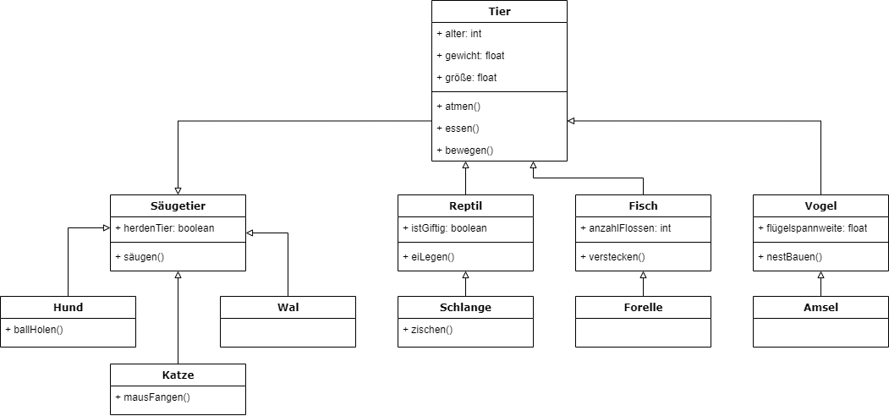

Einführung – Vererbung im Alltag
Das Prinzip der Vererbung lässt sich am einfachsten anhand der Tierwelt veranschaulichen. Nehmen wir eine Reihe von unterschiedlichen Tieren: Hund, Katze, Schlange, Wal, Amsel, und Forelle. Was haben diese Lebewesen alle gemeinsam? Es sind Tiere. Tiere zeichnen sich durch eine Reihe an Eigenschaften und Verhalten aus, welche alle Tiere gemeinsam haben:
- Eigenschaften: Alter, Gewicht, Größe, ...
- Verhalten: atmen, essen, bewegen, ...
Da sie diese Eigenschaften gemeinsam haben, kann man sie zusammen in der Gruppe der Tiere zusammenfassen. Sie "erben" diese Eigenschaften quasi von der allgemeinene Gruppe "Tiere". Allerdings unterscheiden sich diese Tiere auch in ihrer Art: Die Schlange ist ein Reptil, die Amsel ist ein Vogel, Hund, Katze und Wal sind Säugetiere und die Forelle ist ein Fisch. Es gibt hier also noch Untergruppen, die sich unterscheiden. In den Untergruppen wiederum teilen sich Tiere wieder viele Eigenschaften, wie z.B. dass alle Fische mit Kiemen atmen. Jede dieser Untergruppen (Fische, Reptilien, Säugetiere, Vögel) ist eine Klasse und ein Bauplan für Tiere dieser Gruppe und erbt Eigenschaften der allgemeinen Gruppe (oder Klasse) "Tier".
Dieses Prinzip der Vererbung findet Anwendung in der Objektorientierten Programmierung. Warum? Wir haben bereits gelernt, wie wir Code wiederverwenden können. Die Vererbung geht diesen Ansatz noch einen großen Schritt weiter: Sie ermöglicht es, allgemeine Funktionalitäten in einer Oberklasse zu definieren und diese in spezialisierten Klassen automatisch zu übernehmen und bei Bedarf anzupassen. Damit wird nicht nur redundanter Code vermieden, sondern auch die Wartbarkeit und Erweiterbarkeit eurer Programme deutlich verbessert. Außerdem sorgt Vererbung auch für eine übersichtliche und nachvollziehbare Struktur in unserem Code.
In diesem Kapitel lernst du:
- Was Vererbung bedeutet
- Wie man Vererbung in Java umsetzt
- Welche Vorteile Vererbung für die Sortwareentwicklung bringt
Was ist Vererbung?
Vererbung beschreibt den Mechanismus, bei dem eine Klasse (die Superklasse) Eigenschaften und Methoden an eine oder mehrere abgeleitete Klassen (Subklassen) weitergibt. Dabei werden gemeinsame Merkmale einmal definiert und müssen nicht in jeder Subklasse erneut implementiert werden. Das Konzept der Vererbung kann in zwei Gruppen kategorisiert werden:
- Die Subklasse (Kind): Dies ist die Klasse, die Eigenschaften und Methoden von einer anderen Klasse erbt.
- Die Superklasse (Eltern): Dies ist die Klasse von der Eigenschaften und Methoden weitervererbt werden.
Dabei kann eine Subklasse immer nur Eigenschaften und Methoden von einer Superklasse direkt erben und nicht von mehreren.
Wenn wir dieses Prinzip auf unser Tier-Beispiel anwenden, erhalten wir folgende Unterteilung:
- Die Superklasse „Tier“ enthält allgemeine Eigenschaften wie Alter, Gewicht und Größ sowie Methoden wie atmen(), essen() und bewegen().
- Die Subklassen "Säugetier", "Reptil", "Fisch" und "Vogel" übernehmen diese Eigenschaften und Methoden von "Tier", haben aber auch jeweils eigene Eigenschaften und Methoden, wie Flossenanzahl, Flügelspannweite und eiLegen().
- Die Subklassen sind gleichzeitig Superklassen für die nächste Vererbungsebene
- Die Subklassen „Hund“, „Amsel“ oder „Wal“ erben die Eigenschaften und Methoden von alle ihren Superklassen und besitzen wiederum eigene Eigenschaften und Methoden, wie z.B. ballHolen().
- Wichtig: "Hund" erbt nur die Eigenschaften und Methoden von "Säugetier". Indirekt erbt "Hund" natürlich auch die Eigenschaften und Methoden von "Tier", aber nur, weil "Säugetier" sie von "Tier" erbt. Das ist gemeint mit: Eine Subklasse kann immer nur Eigenschaften und Methoden einer Superklasse direkt erben. "Hund" kann auch keine weiteren Eigenschaften von einer weiteren Klasse "Haustier" erben.
Wenn wir nun noch die unterschiedlichen Arten von Tieren hinzufügen (Vogel, Säugetier, etc.), dann sind diese Subklassen von "Tier" und Superklassen von "Hund", "Amsel", "Wal" und Co. Diese Vererbungshierarchie kann mithilfe eines Klassendiagramms veranschaulicht werden. Wie man so ein Klassendiagramm erstellt, lernen wir im Abschnitt "Dokumentation". Alle Tiere erben die Eigenschaften und Methoden von den Klassen auf die der jeweilge Pfeil zeigt.

Ein anderes Beispiel für Vererbung ist die Vererbung von Stileigenschaften in der Typografie:In Design-Programmen wie InDesign von Adobe können verschiedene Absatzstile festgelegt werden für Fließtext, Stichpunkte, Überschriften, etc. Diese ABsatzstile können so angelegt werden, dass sie aufeinander aufbauen. Das bedeutet, sie übernehmen bestimmte Eigenschaften, wie z.B. die Schriftart, von dem Absatzstil, auf den sie aufbauen. Wenn ich dann im Desgin-Prozess auf die Idee komme doch eine andere Schriftart verwenden zu wollen, muss ich nicht jeden einzelnen Absatzstil anpassen, sondern im besten Fall nur einen, auf den alle anderen aufbauen.
Die Verwendung von Vererbung bringt zahlreiche Vorteile in der objektorientierten Programmierung mit sich:
- Wiederverwendbarkeit: Einmal definierte Eigenschaften in der Superklasse werden in allen Subklassen verfügbar, was den Programmieraufwand reduziert.
- Wartbarkeit: Änderungen in der Superklasse wirken sich automatisch auf alle abgeleiteten Klassen aus, sofern die vererbten Methoden genutzt werden.
- Erweiterbarkeit: Neue Klassen können durch Ableiten von bestehenden Klassen schnell erweitert werden, ohne den gesamten Code neu schreiben zu müssen.
- Strukturierung: Komplexe Systeme werden in eine logische Hierarchie unterteilt, was das Verständnis und die Modellierung realer Zusammenhänge erleichtert.
Implementierung von Vererbung in Java
In Java erfolgt die Vererbung mittels des Schlüsselworts „extends“. Eine Klasse, die eine andere Klasse erweitert, übernimmt damit alle öffentlichen (public) und geschützten (protected) Eigenschaften und Methoden der Superklasse.
Beispiel: Tierhierarchie
Wir definieren zunächst eine Superklasse Tier:
class Tier {
// Geschützte Attribute, damit Subklassen darauf zugreifen können
protected int alter;
protected float gewicht;
protected float größe;
// Konstruktor der Superklasse
public Tier(int alter, float gewicht, float größe) {
this.alter = alter;
this.gewicht = gewicht;
this.größe = größe;
}
// Methoden, die allgemeines Verhalten beschreibt
public void atmen() {
System.out.println("Das Tier atmet");
}
public void essen() {
System.out.println("Das Tier isst");
}
public void bewegen() {
System.out.println("Das Tier bewegt sich");
}
}Nun erstellen wir eine Subklassen Säugetier und Fisch, die von Tier erben:
class Säugetier extends Tier {
// Neues Attribut dieser Klasse
protected boolean herdenTier;
// Konstruktor der Subklasse, ruft den Konstruktor der Superklasse auf
public Säugetier(int alter, int gewicht, int größe, boolean herdenTier) {
super(alter, gewicht, größe);
// Initialisieren der Attribute dieser Klasse
this.herdenTier = herdenTier ;
}
// Neue Methode in der Klasse
public void säugen() {
System.out.println("Das Säugetier säugt ein Tierbaby");
}
}
class Fisch extends Tier {
// Neues Attribut dieser Klasse
protected int anzahlFlossen;
// Konstruktor der Subklasse, ruft den Konstruktor der Superklasse auf
public Fisch(int alter, int gewicht, int größe, int anzahlFlossen) {
super(alter, gewicht, größe);
// Initialisieren der Attribute dieser Klasse
this.anzahlFlossen = anzahlFlossen;
}
// Neue Methode in der Klasse
public void verstecken() {
System.out.println("Der Fisch versteckt sich");
}
}Erklärung:
- Das Schlüsselwort extends zeigt an, dass Säugetier und Fisch von Tier erben.
- Mit dem Aufruf von super(alter, gewicht, größe) im Konstruktor der Subklasse wird der Konstruktor der Oberklasse ausgeführt, sodass die Attribute korrekt initialisiert werden.
- Danach können die weiteren klassenspezifischen Attributen initialisiert werden.
- Abschließend werden die neuen klassenspazifischen Methoden deklariert.
Im nächsten Schritt erstellen wir zwei weitere Subklassen: Hund und Forelle. Diese erben jeweils von Säugetier und Fisch.
class Hund extends Säugetier {
// Konstruktor der Subklasse, ruft den Konstruktor der Superklasse auf
public Hund (int alter, int gewicht, int größe, boolean herdenTier) {
super(alter, gewicht, größe, herdenTier);
}
// Neue Methode in der Klasse
public void ballHolen() {
System.out.println("Der Hund holt einen Ball!");
}
// Überschreiben der Methode aus der Tier-Klasse
@Override
public void bewegen() {
System.out.println("Der Hund läuft.");
}
}
class Forelle extends Fisch {
// Konstruktor der Subklasse, ruft den Konstruktor der Superklasse auf
public Fisch(int alter, int gewicht, int größe, int anzahlFlossen) {
super(alter, gewicht, größe, anzahlFlossen);
}
// Überschreiben der Methode aus der Tier-Klasse
@Override
public void bewegen() {
System.out.println("Die Forelle schwimmt.");
}
}
public class Main {
public static void main(String[] args) {
// Erstellen einer neuen Instanz von Hund und Forelle
Hund meinHund = new Hund(8, 9.5f, 62.2f, false);
Forelle meineForelle = new Forelle(1, 0.2f, 16.4f, 7);
meinHund.bewegen();
meineForelle.bewegen();
/* Ausgabe:
Der Hund läuft
Die Forelle schwimmt
*/
}
}Erklärung: Die Methode bewegen() wird in der Subklasse überschrieben. Das erfolgt mithilfer der Annotation @Override. Dadurch wird das spezifische Verhalten (Laufen oder Schwimmen) implementiert, während die Grundstruktur aus der Superklasse übernommen wird. Diese Technik der Vererbung ermöglicht es, zunächst allgemeine Verhaltensweisen zu definieren und sie später in den abgeleiteten Klassen zu spezifizieren.
Die Superklassen Tier, Fisch und Säugetier sind ziemlich abstrakt. Das bedeutet, dass wahrscheinlich zu keinem Zeitpunkt ein Objekt von diesen Klassen erstellt wird, denn kein Tier ist "nur" ein Tier. Bei einem Tier handelt es sich immer um eine konkrete Rasse oder Art, wie z.B. Hund, Katze, Forelle, etc. Das Prinzip der Abstraktion schauen wir uns genauer im Kapitel "Abstrakte Klassen und Interfaces" an. Hier kannst du aber bereits erkennen, was mit Abstraktion gemeint ist: Eine Klasse, die zwar Eigenschaften und Methoden definiert, aber nicht dafür gedacht ist, dass Objekte aus ihr erstellt werden.
Das Schlüsselwort „super“
Das Schlüsselwort super spielt in der Vererbung eine zentrale Rolle. Es dient dazu, auf die Mitglieder (Attribute und Methoden) der Superklasse zuzugreifen. super ist quasi ein Verweis auf die Superklasse.
In erster Linie wird das Schlüsselwort super im Konstruktor einer Subklasse verwendet, um den Konstruktor der Superklasse aufzurufen. Das erfolgt, indem man hinter super in den Klammern () die Parameter des Konstruktors der Superklasse gibt. Dann wird dieser Konstruktor mit diesen Parametern aufgerufen. Danach kann man die klassenspezifischen Attribute der Subklasse intialisieren. Wichtig: Der Aufruf des Konstruktors der Superklasse mithilfe von super() muss der erste Befehl innerhalb des Konstruktors der Subklasse sein.
Ein weiteres Einsatzgebiet ist, super zu verwenden, um auf Methoden oder Attribute aus der Superklasse zuzugreifen. Dies erfolgt mithilfe der Punktnotation.
Beispiel:
class Katze extends Säugetier {
public Katze(int alter, int gewicht, int größe, boolean herdenTier) {
super(alter, gewicht, größe, herdenTier);
}
@Override
public void säugen() {
// Aufruf der ursrprünglichen Implementierung aus der Superklasse,
// falls gewünscht, bevor der spezifische Code ausgeführt wird
super.säugen();
System.out.println("Die Katze säugt ein kleines Kätzchen");
}
}
public class Main {
public static void main(String[] args) {
// Erstellen einer neuen Instanz von Katze
Katze meineKatze = new Katze(4, 5.3, 34, false);
meineKatze.säugen();
/* Ausgabe:
Das Säugetier säugt ein Tierbaby
Die Katze säugt ein kleines Kätzchen
*/
}
}In diesem Beispiel wird zunächst die Methode säugen() der Superklasse aufgerufen und anschließend ein zusätzlicher, spezifischer Teil ausgeführt. Dadurch wird klar, wie Vererbung eine flexible Erweiterung und Anpassung der bestehenden Funktionalitäten ermöglicht.
Vererbung verhindern mit "final"
Wenn du eine Klasse hast, von der nicht weiter vererbt werden soll, kannst du diese mit dem Schlüsselwort final deklarieren. Zum Beispiel könnten wir eine neue Klasse Dackel erstellen, die von Hund erbt und gleichzeitig festlegen, dass nach Dackel "Schluss ist", wir also keine weiteren Vererbungen mehr zulassen möchten.
final class Dackel extends Hund {
public Dackel (int alter, int gewicht, int größe, boolean herdenTier) {
super(alter, gewicht, größe, herdenTier);
}
// Überschreiben der Methode aus der Hund-Klasse
@Override
public void ballHolen() {
System.out.println("Der Dackel holt einen Ball!");
}
// Überschreiben der Methode aus der Tier-Klasse
@Override
public void bewegen() {
System.out.println("Der Dackel läuft.");
}
}Übungen
Aufgaben
- Aufgabe 1: Fahrzeug-Vererbungshierarchie implementieren
- Erstelle eine Superklasse „Fahrzeug“ mit folgenden Attributen und Methoden:
- Attribute: anzahlRaeder, Baujahr, geschwindigkeit
- Methoden: beschleunigen(), bremsen() (die Methoden sollen eine einfache Konsolenausgabe enthalten).
- Erstelle eine Subklasse "MotorisiertesFahrzeug" mit folgenden weiteren Attributen und Methoden:
- Attribut: tankFuellung
- Methode: tanken(double menge)
- Erstelle nun die Subklassen "Fahrrad", welche direkt von der "Fahzeug"-Klassse erbt und "PKW" und "Motorrad", welche von "MotorisiertesFahrzeug" erbt.
- Füge jeder Klasse ein spezifisches Attribut doer eine Methoden hinzu, die für den jeweiligen Fahrzeugtyp charakteristisch sind.
- Erstelle eine Superklasse „Fahrzeug“ mit folgenden Attributen und Methoden:
- Aufgabe 2: Erweiterung mit sinnvoller Kapselung
- Ergänze deine Klassen, um sinnvolle Zugriffsmodifikatoren. Es sollen so wenig wie möglich Attribute und Methoden public sein.
- Ergänze deine Klassen um sinnvolle Getter und Setter, um die Daten zu schützen und zu prüfen, bevor sie geändert werden.
- setAnzahlRaeder(int anzahl) soll nur eine Anzahl größer 0 akzeptieren
- tanken(double menge) soll nur eine sinnvolle Menge akzeptieren
- usw.
Fragen
- Was versteht man unter Vererbung in der objektorientierten Programmierung, und welche Vorteile bietet sie?
- Wie wird in Java die Vererbung syntaktisch umgesetzt, und welche Rolle spielt dabei das Schlüsselwort „extends“?
- Erklärt den Zweck des Schlüsselworts „super“ in Konstruktoren und Methoden.
Zusammenfassung
- Vererbung ermöglicht es, gemeinsame Eigenschaften und Methoden in einer Superklasse zu definieren und diese in allen abgeleiteten Subklassen wiederzuverwenden.
- Superklasse: diese Klasse vererbt Eigenschaften und Methoden
- Subklasse: diese Klasse erbt Eigenschaften und Methoden
- In einer Vererbungshierarchie mit mehreren Vererbungsebenen, kann eine Klasse sowohl Super- als auch Subklasse sein.
- In Java wird Vererbung mit dem Schlüsselwort „extends“ umgesetzt.
- Das Schlüsselwort „super“ wird genutzt, um auf Konstruktoren, Methoden und Attribute der Superklasse zuzugreifen.
- Vererbung fördert Wiederverwendbarkeit, Wartbarkeit und Erweiterbarkeit des Codes – wichtige Aspekte in interdisziplinären Projekten im Medieningenieurwesen.